SHarness runs an agent's tools as small processes, each under a Process Behaviour Policy: what it may read, write, run and connect to, named by one hash the person supplies. A tricked agent cannot widen it, because the kernel was told before the process started. Today that is a CLI you can run on Linux, a kernel that boots in your browser to prove it, and a design for the launcher that binds the agent itself.
A policy you can hash, a kernel that enforces it on the process, and a launcher above the agent that starts only what the hash names. The first two run today; the third is the design.

execve. The process and everything it starts can only lose rights.sharness-ai hello is the acceptance test: six probes under a deny-all policy, each expected to be allowed or refused. This is the run, replayed.

held in five places: a cloud session, your browser, headless Chromium, Node and a chroot on the host kernel
the host's, an emulated one in a browser tab, and an emulated one in Node: the same files, the same result
from a hello world to the sgit CLI, each hashing to the same value in Python, in the browser and in the Linux guest
on Python 3.11, 3.12 and 3.13, on every push; 0.6 s for the whole hello run on real hardware
Three ways in. None needs a component that does not exist yet; each runs the experiments that do.
Two terminals in one tab. Pyodide: Python in WebAssembly, where pip install sharness-ai gives you policy hash, check and translate. Linux: Alpine with a Landlock kernel, where every sharness-ai run is enforced. One policy, hashed three ways.
$ pip install sharness-ai sharness:/work# sharness-ai hello result 6/6 heldOpen the playground → Or just watch the kernel boot →
Standard library only, so the install is one line. probe prints what a process here can do before any policy; hello checks that a policy holds; run puts any command under one.
$ pip install git+https://github.com/SHarness-AI/SHarness-AI__CLI@dev $ sharness-ai probe $ sharness-ai hello $ sharness-ai run --policy p2-tool-server.json -- my-tool # PyPI carries the skeleton (v0.1.0); the experiments ship with the next releaseThe CLI → Every command with its output →
The CLI repository carries a skill that installs the package, runs probe and hello inside the session under the design's safety rules, and reports in the site's status words. It also says, every time, that a policy the session applies to its child does not bind the session.
> run the sharness hello sharness-ai hello … result 6/6 held caveat: a Boundary for the child, a Setting for this sessionThe skill → What Claude Code's sandbox gives, and what this adds →
The claim "the kernel enforces it" should not need you to trust a screenshot. So the kernel boots in the tab: Alpine Linux with Landlock, under an x86 emulator in WebAssembly, running the same package and the same policies. Nothing installed, no account, 25 MB of static files.

probe, hello, run under the example policies, on the serial console. Boot it →Three people, one policy format. The policy is the centre; every enforcer, ours included, is a target for it.
A Claude Code session, an orchestrator, a script that calls tools: start each tool with sharness-ai run --policy … and the kernel holds it to the file, port and memory limits you wrote. P1 and P2 are the profiles to start from. The caveat applies: the agent's own process is bound only by a launcher above it.
Write the policy your tool needs, hash it, and publish both. Whoever runs your tool runs it under that hash, and sees exactly what you asked for: a read-only workspace, one port, a memory cap. A tool that needs less is easier to trust.
Process Behaviour Policies → You run a platformsharness-ai policy translate writes the same policy as a bubblewrap command, a docker run, a Claude Code sandbox setting or a Kubernetes Pod and NetworkPolicy, and lists what each of those cannot enforce. The enforceability matrix is that list, row by row.
$ pip install git+https://github.com/SHarness-AI/SHarness-AI__CLI@dev $ sharness-ai hello --jsonthen open a hello report on GitHub (two fields: the JSON, and anything odd). Every report goes on the machines page with its kernel, Landlock ABI and result, including the ones that did not hold: a refusal that did not happen is the most useful thing you can send. Nothing in the JSON identifies you;
probe prints the names of proxy variables, never their values.Bound everything a process can do and what is left is its policy: no filesystem of its own to write, no network stack, no key, no shell, no model API. In their place, five doors, each a small REST service on loopback with its own uid and policy, and the bootstrap that started them. Designed, not built; the locks under them run today.

Each command in a fresh sandbox under a profile, output filtered. Where every lock is applied at once, and the first to build: once a command can only run through this door, the other doors are the only ways out.
Read → pick one: worth it aloneThe TLS client, so the hostname is seen and verified; host, endpoint and id allowlists; no redirects elsewhere, no IP literals; a log of every request. Its allowlist already runs in the playground, outside a guest.
Read → secretsOpens sealed things, derives what the caller needs, re-seals it to a one-time key. Never returns a clear key; frozen between calls; its page unreadable even by root.
Read → filesWrites under the root it owns, inside the rules, and refuses anything that parses as a clear key, a private key or a token.
Read → the modelThe Messages API, unchanged, with the key out of the agent's process, the tool list pinned, and a secret filter on every tool result.
Read → the bootstrapRefuses unless the manifest hashes to what the person supplied; one uid per component; a session CA. Who runs it decides what the locks are.
Read →Every door speaks HTTP over loopback under mutual TLS, so any language can call it and every request has a verdict and a log line; a handshake costs about 3 ms. The components, as an operating system → · how they work together: the brief → · which layer refuses a call between two roles →
Dinis Cruz's memos in his voice, and the agents' record of what they delivered, each with the commits to check it against.
A real kernel enforces a Process Behaviour Policy in Chrome: what is in the tab, what held where, what did not work at first, how it fits together.
Read → sharness.dev · 25 Oct 2026What in each component is a specification and what is an implementation; the component-by-language map; the adoption ladder from a policy file to a component.
Read → Dinis Cruz · 24 Oct 2026Behaviour policies enforced from outside the agent, one small component at a time, starting with my own Claude sessions.
Read → sharness.build · 24 Oct 2026Four commands, three storyboards, two mockups, and what a full read of the design found.
Read → AllNewest first, with who wrote each and how; each with a markdown twin.
Open →The same distinction runs through every page. Every number is labelled; nothing is presented as built.
| Label | Means |
|---|---|
| Measured | Probed or timed in a named environment on a named date, with the method on Evidence. For example: hello 6 of 6 in five places; a mutual TLS handshake between components ≈ 3.2 ms; a memfd_secret page unreadable even by root. |
| Runnable | The code is in the repository and its tests pass: probe, policy hash, check, translate, run, hello, the browser bench, the playground. |
| Designed / proposed | How SHarness would work: the components, the KMS protocol, the policy layers, .llm, .bash, the deployment topologies. |
| Never claimed | That any component is built or released; protection against root or kernel compromise; anything about any platform's plans; that a schema bounds intent (it bounds shape). |
The roadmap and open decisions → · the source documents, verbatim → · about and naming → · getting users: the review and the plan →